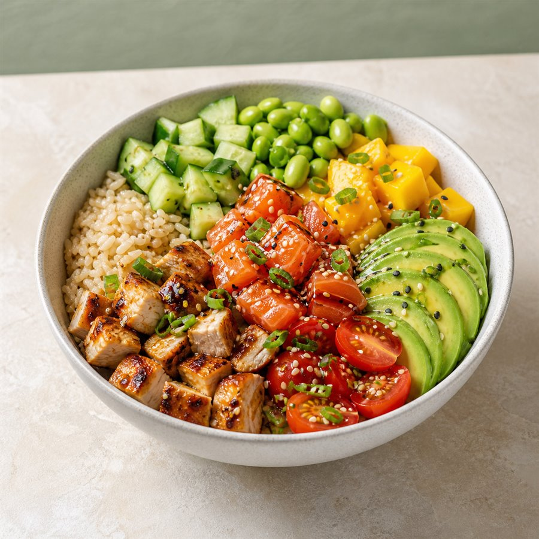
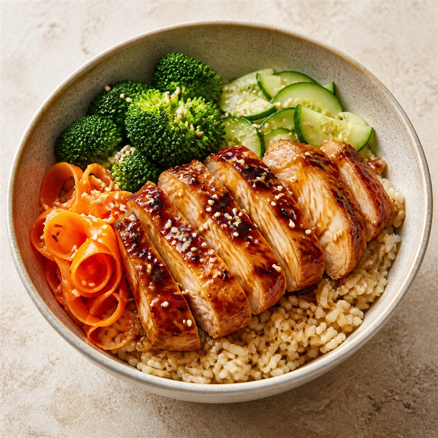

Memoria funcional, comercial y técnica de Verde Bowl V3: qué hace el sistema, cómo lo hace, por qué fue diseñado así y qué valor entrega a clientes, personal y dirección.
Este documento presenta Verde Bowl como producto digital y como plataforma operativa. Está pensado para propietarios, potenciales clientes, aliados, inversionistas y equipos técnicos que necesiten comprender la solución sin leer el código fuente.
Explicar de forma profesional qué problema resuelve el proyecto, cómo se conectan sus módulos y por qué sus decisiones funcionales reducen errores, trabajo manual y riesgo operativo.
Aplicación web, aplicación móvil, API, base de datos, procesos en segundo plano, operación multisede, pagos, cocina, salón, inventario, delivery, administración y seguridad.
La descripción se obtuvo del código y la documentación del repositorio. Las cifras técnicas y verificaciones corresponden al estado local revisado el 14 de agosto de 2026.
No sustituye una certificación contable, tributaria, legal o de ciberseguridad. Las integraciones con bancos, OSE/SUNAT, mapas, correo y tiendas móviles requieren credenciales y validación del proveedor elegido.
| Campo | Detalle |
|---|---|
| Documento | Informe integral del proyecto Verde Bowl V3 |
| Tipo | Memoria funcional, comercial y técnica |
| Estado | Versión 1.0 — línea base para presentación a interesados |
| Producto | Plataforma web y móvil de alimentación saludable y gestión de restaurantes |
| Mercado de referencia | Perú; operación preparada para delivery, recojo y consumo en salón |
| Confidencialidad sugerida | Uso comercial controlado. Retirar credenciales, datos personales y secretos antes de compartir anexos técnicos. |
La organización sigue una lógica de tesis aplicada: contexto, objetivos, diseño de la solución, implementación, validación, impacto y recomendaciones.
Verde Bowl permite que una compra iniciada en web, app o mesa termine correctamente en cocina, inventario, despacho, caja y seguimiento, sin duplicar sistemas por canal.

Delivery, recojo y salón/QR.
Accesos finos por función y sede.
Cobertura amplia del negocio.
Cliente y operación en campo.
Vende productos y bowls personalizados, gestiona clientes, planes, pagos y direcciones, y coordina las estaciones internas necesarias para cumplir la promesa de entrega.
Centraliza reglas en una API transaccional. La web y el móvil consumen el mismo servidor; el pedido mantiene su sede, importes y estados como una única fuente de verdad.
Evita cocinar pedidos impagos, vender insumos agotados, enviar a una sede incorrecta, duplicar pagos o dar acceso global a personal que solo debe operar un local.
Un negocio de alimentos mezcla decisiones comerciales, logísticas y sanitarias en pocos minutos. Si esas decisiones viven en herramientas separadas, aumentan las equivocaciones y se pierde trazabilidad.
Necesita descubrir, personalizar, pagar y seguir un pedido con información clara sobre precio, sede, horario y entrega.
Necesita ver solo tareas válidas y accionables: comandas pagadas o autorizadas, productos exactos y tiempos comprometidos.
Necesita controlar sedes, catálogo, accesos, dinero, inventario, reclamos y desempeño desde una fuente confiable.
| Dimensión | Criterio observable | Resultado buscado |
|---|---|---|
| Venta | Precio y beneficios recalculados en servidor | Evitar importes manipulados desde el cliente |
| Operación | Ticket creado al confirmar o autorizar el cobro | No cocinar pedidos impagos |
| Cobertura | Sede, tarifa, mínimo y tiempo antes de delivery | Promesa logística explícita |
| Seguridad | Permiso más alcance por sucursal | Menor exposición de datos y acciones |
| Confiabilidad | Idempotencia, bloqueos y eventos históricos | Evitar dobles efectos y facilitar soporte |
El sistema no crea una aplicación independiente para cada local o cada rol. Comparte catálogo, identidad y clientes, y separa la operación mediante el identificador de sucursal y los permisos.
Menú, búsqueda, constructor, favoritos, planes, carrito, direcciones, pago, seguimiento, opiniones y soporte.
Pedidos, cocina, salón, caja, inventario, reparto, validación de pagos locales y atención de reclamos.
Reportes, usuarios, roles, sedes, cobertura, catálogo, multimedia, precios, promociones y configuración.
Agregar un segundo local no exige duplicar la plataforma. La nueva sede recibe horarios, capacidad, zonas, stock, mesas, personal y operación propios. El catálogo y la marca pueden mantenerse compartidos, mientras el backend limita cada consulta al alcance autorizado.
La web ofrece amplitud para explorar y administrar. La app móvil prioriza acciones táctiles, ubicación, cámara, notificaciones y operación diaria. Ambas respetan las mismas reglas del servidor.
Para delivery se comunica quién atenderá, tarifa, pedido mínimo y tiempo estimado. Si no existe cobertura, la dirección puede conservarse y se propone recojo en el local más cercano.
El cliente no depende de una pantalla de “éxito” para que su orden exista. El estado procede del backend y de la confirmación real del medio de pago.
En alimentos, la incertidumbre reduce conversión y aumenta consultas de soporte. Verde Bowl busca mostrar las condiciones que cambian la decisión —precio final, beneficios, cobertura, horario y sede— antes de comprometer el pedido, y luego conservar un seguimiento comprensible.
El catálogo combina contenido comercial con reglas de nutrición, precio, disponibilidad y publicación. El constructor convierte una elección creativa en una configuración que el servidor puede validar y cotizar.
Permite vender una oferta estándar y, al mismo tiempo, una experiencia de personalización profunda.
Modela cada paso y opción como datos; el precio no depende de cálculos confiados al navegador.
Evita combinaciones inválidas y permite que negocio y nutrición actualicen contenido sin desplegar código.
Antes de crear un pedido, el servidor vuelve a evaluar productos, cantidades, sede, cobertura, horario, cupo, beneficios, cupón, saldo y datos de atención.
El sistema dispone de una abstracción de proveedor. En desarrollo puede usar un simulador; con credenciales se integra a un checkout alojado. Los datos de tarjeta no pasan por Verde Bowl.
Puede cubrir todo o parte del pedido. Si cubre el total, no es necesario abrir un checkout externo. Si falta importe, se combina con otro medio.
El cliente registra su operación; Caja la compara y aprueba o rechaza. “Reportado” no equivale a “pagado”, evitando enviar comandas sin conciliación.
El checkout captura datos para boleta o factura y congela el desglose tributario del pedido. El ticket interno sirve para entrega y control, pero se marca como no fiscal. La emisión automática de un CPE válido requiere integrar y configurar un OSE o proveedor autorizado.
Es la vista comercial y administrativa del pedido completo. Conserva cliente, canal, sede, productos, importes, pagos, comprobante, historial, cancelaciones, devoluciones y seguimiento.
Visión integralEs una vista de producción. Solo muestra comandas que requieren preparación, con ingredientes, personalizaciones, notas, alérgenos, prioridad y tiempo comprometido.
Trabajo accionable| Escenario | Pedidos | Cocina | Motivo |
|---|---|---|---|
| Pago todavía pendiente | Sí | No | No se prepara sin confirmación |
| Pago confirmado, pedido inmediato | Sí | Sí | Ya es una tarea válida |
| Pedido programado para más tarde | Sí | Aún no | Se libera al llegar el margen de preparación |
| En preparación o listo | Sí | Sí | Permanece hasta completar su relevo |
| Cancelado, entregado o cerrado | Historial | No activo | Ya no requiere trabajo de cocina |
Los cambios de estado generan eventos históricos. Esto permite explicar quién realizó cada transición, cuándo ocurrió y qué módulo debe actuar a continuación.
El KDS transforma pedidos confirmados en tareas visuales, priorizadas y medibles. Está pensado para una pantalla de cocina, no como duplicado del módulo administrativo.
Pedido recibido, todavía no aceptado. Se ordena por prioridad y hora comprometida.
La cocina asumió la tarea. Se bloquean ampliaciones incompatibles y se consume stock reservado.
La producción terminó. Delivery, mostrador o salón recibe el relevo según el canal.
La impresión térmica está orientada a papel de 80 mm. La impresión silenciosa depende de la configuración segura del navegador y del equipo dedicado; por defecto se conserva la selección de impresora del sistema.
El sistema separa dos decisiones: conservar una dirección útil para el cliente y determinar si existe cobertura operativa real para un pedido concreto.
| Criterio | Función | Razón empresarial |
|---|---|---|
| Asociación activa | Excluye relaciones local–zona deshabilitadas | No prometer con configuraciones retiradas |
| Prioridad | Aplica la preferencia definida por operación | Distribuir demanda o proteger una sede |
| Horario | Considera apertura, cierre y excepciones | No asignar a un local incapaz de atender |
| Capacidad | Permite evitar sedes saturadas | Defender el tiempo prometido |
| Ruta real | Compara distancia/tiempo de candidatos | Una línea recta no representa el tráfico vial |
Delivery posee su propio ciclo porque preparar alimentos y transportarlos son responsabilidades distintas. El pedido coordina ambos sin confundir sus estados.
Organiza la asignación y el avance de la entrega, sea con flota propia o un proveedor registrado.
Mantiene una entidad de delivery y sus eventos, vinculada al pedido y a la sede.
Permite medir y corregir la última milla sin sobrecargar la pantalla de Cocina.
La arquitectura admite integrar ubicación en vivo, prueba de entrega por foto o firma y API de operadores logísticos. Estas capacidades requieren consentimiento, almacenamiento y acuerdos con el proveedor seleccionado.
| Regla | Por qué existe |
|---|---|
| El QR usa UUID y puede renovarse o desactivarse | Evita adivinar mesas e invalida carteles antiguos |
| La sede procede del token, no del navegador | Impide enviar productos a otro local |
| No se amplía una comanda ya en preparación | Cocina no recibe cambios tardíos invisibles |
| El precio se revalida dentro de la transacción | El cliente no puede alterar el total |
| El QR no captura tarjeta | Reduce exposición de datos sensibles |
Caja distingue venta registrada, cobrado y efectivo pendiente. Esta separación evita que una comanda abierta se trate como dinero ya recibido.
Inventario no es solo una lista de cantidades. Relaciona insumos, recetas, sucursal, reservas y movimientos para proteger la venta y explicar cada variación.
Cuando un ingrediente crítico se agota, las opciones que lo necesitan pueden dejar de venderse en esa sucursal. Al reponer existencias, vuelven a estar disponibles según la configuración.
Esto conecta la promesa visible del menú con la realidad del local.
| Estado | Criterio operativo | Acción sugerida |
|---|---|---|
| Saludable | Existencia suficiente respecto al mínimo y consumo | Sin acción inmediata |
| Bajo | Bajo mínimo o pocos días de cobertura | Programar reposición |
| Crítico | Riesgo cercano de quiebre | Priorizar compra o limitar venta |
| Agotado | Disponible menor o igual a cero | Ocultar opciones afectadas |
La compra sugerida considera mínimos y consumo reciente. Es una ayuda operativa, no una orden automática al proveedor.
Los planes son compras únicas de saldo con beneficios; no son suscripciones automáticas. El sistema separa capital, bonificación, vigencia y movimientos para evitar editar saldos manualmente.
Precio, saldo otorgado, vigencia, descuento por pedido y delivery gratuito pueden configurarse como datos.
Cada crédito, débito, devolución o vencimiento genera una transacción con saldo resultante e idempotencia.
Reglas de vigencia, tipo de descuento, compra mínima y límites de uso se aplican en la cotización.
Antes de publicar un plan se deben modelar margen, frecuencia esperada, costo de delivery y comportamiento de vencimiento. La tecnología ejecuta las reglas; la rentabilidad depende de diseñarlas con datos reales.
El panel reúne operación diaria y gobierno. Cada persona ve módulos y locales según sus permisos; no se necesitan paneles técnicamente separados para cada cargo.
Pedidos, pagos, devoluciones, comprobantes y caja.
Cocina, salón, mesas, inventario y reparto.
Catálogo, builder, precios, multimedia, planes y cupones.
Usuarios, roles, cobertura, reclamos, auditoría y negocio.
| Área | Decisiones que permite tomar |
|---|---|
| Resumen y reportes | Ventas, ticket promedio, cancelaciones, canales, demanda y productos |
| Pedidos y caja | Supervisar estados, validar cobros locales, cancelar o devolver con permiso |
| Cocina y reparto | Distribuir trabajo y controlar avance por sede |
| Inventario | Registrar movimientos, detectar mínimos y sugerir compra |
| Catálogo y constructor | Definir qué se vende, cómo se compone, cuánto cuesta y cuándo aparece |
| Cobertura | Locales, zonas, polígonos, horarios, tarifas, mínimos, prioridades y franjas |
| Usuarios y roles | Definir quién puede hacer qué y en qué sucursal |
| Negocio y diseño | Datos legales, pagos, correo, marca y componentes multimedia |
Los indicadores respetan periodo, canal y alcance de sucursal. Caja distingue venta registrada, importe cobrado y efectivo pendiente para no mezclar conceptos.
Las configuraciones territoriales pueden trabajarse como borradores y publicarse de forma controlada, reduciendo cambios accidentales durante la operación.
Clientes y personal pueden iniciar sesión al mismo tiempo. Cada sesión obtiene identidad, permisos y sedes autorizadas; los cambios relevantes se consultan desde el servidor compartido.
Unidad atómica, por ejemplo leer cocina, operar una comanda, devolver un pago o administrar cobertura.
Paquete editable de permisos: cocina, cajero, mozo, soporte, administrador de sede, auditor, etc.
Limita esos permisos a una o varias sucursales. Sin alcance restringido, el usuario autorizado puede ser global.
| Usuario | Puede | No debería |
|---|---|---|
| Cocina Miraflores | Leer y operar tickets de Miraflores | Ver pagos o comandas de San Isidro |
| Cajero de sede | Validar pagos y cerrar ventas de su local | Cambiar catálogo global o roles |
| Nutricionista | Editar nutrición, alérgenos y etiquetas | Modificar precios o devolver dinero |
| Administrador general | Supervisar todos los locales autorizados | Nombrar superadministrador sin la protección correspondiente |
| Cliente | Ver únicamente su cuenta y pedidos | Consultar datos de otros clientes o el panel |
Dos pantallas pueden consultar el mismo ticket. La transición válida la decide el backend y se persiste; las demás pantallas reciben o consultan el nuevo estado.
Múltiples usuarios no equivale automáticamente a múltiples instancias del servidor. Para escalar horizontalmente los jobs deben moverse a una cola o usar un lock distribuido.
El usuario puede mantener nombre, teléfono, preferencias y fotografía de perfil. La imagen debe reflejarse en los espacios donde se representa su identidad —encabezado, cuenta y vistas relacionadas— usando una alternativa con iniciales cuando no existe fotografía.
Útil para estaciones de cocina instaladas como aplicación y alertas fuera de la pestaña.
Envía eventos a dispositivos móviles registrados, respetando permiso y sede del personal.
SMTP configurable; las credenciales se cifran y el fallo del correo no bloquea el pedido.
Los avisos operativos del pedido se diferencian de comunicaciones promocionales y analítica. Esta separación ayuda a respetar la finalidad del dato y evita condicionar una compra a publicidad no necesaria.
Auth, cuenta, geo, catálogo, pagos, operación y más.
Funcionalidad organizada por feature.
Evolución explícita del esquema.
Web y móvil no reimplementan el negocio. Consumen contratos comunes; el servidor conserva autoridad y permite mejorar una regla en un único lugar.
Validaciones de coordenadas, tarjetas de cobertura, alertas de cocina y formateadores se extrajeron a utilidades, componentes y hooks reutilizables.
/api/v1, lo que facilita evolucionar clientes sin mezclar contratos incompatibles.Un sistema de venta debe poder reconstruir por qué se cobró un importe, qué contenía el pedido y cómo cambió. Verde Bowl utiliza snapshots, libros de movimiento y eventos para preservar ese contexto.
El pedido congela nombres, precios, descuentos, nutrición, alérgenos y datos tributarios relevantes. Si el catálogo cambia mañana, la compra pasada no se reescribe.
Billetera, inventario, cocina, delivery, pagos y estados mantienen movimientos o eventos que permiten seguir la secuencia operacional.
Las operaciones críticas agrupan cambios relacionados. Una falla evita dejar pedido, stock, cupón o saldo en estados parciales incompatibles.
Recursos como billetera, pedido o stock pueden bloquearse durante una operación para que dos solicitudes simultáneas no gasten o modifiquen lo mismo.
| Mecanismo | Riesgo que reduce | Ejemplo |
|---|---|---|
| Idempotencia | Doble efecto por reintento | Dos clics no crean dos pedidos equivalentes |
| Webhook firmado | Confirmación falsa de pago | Solo un evento válido avanza tarjeta |
| Índice único | Duplicados lógicos | Un evento externo no se procesa dos veces |
| Reserva temporal | Sobreventa durante el pago | Stock, cupón, franja y saldo quedan protegidos |
| Job de expiración | Recursos retenidos indefinidamente | Libera pedidos abandonados |
| Zona horaria explícita | Horarios desplazados en servidor | Operación comercial interpretada en Lima |
Los seeders son idempotentes: pueden completar datos base faltantes sin reemplazar automáticamente los cambios administrados desde el panel. En producción, la evolución del esquema debe realizarse mediante migraciones.
Sesiones con tokens, refresh controlado, contraseñas con hash y recuperación mediante enlaces temporales.
40 permisos declarativos, roles configurables y alcance de sucursal comprobado en endpoints.
Helmet, CORS, límites de tamaño, cookies, rate limiting, validación y manejo uniforme de errores.
| Amenaza | Control |
|---|---|
| Cambiar branchId en una petición | Validación de alcance en backend |
| Alterar el precio desde el navegador | Recalcular cotización y disponibilidad en servidor |
| Reutilizar un webhook | Firma, identificador único e idempotencia |
| Acceder a un pedido ajeno | Propiedad del recurso o permiso administrativo |
| Exponer credenciales SMTP | Cifrado en base y respuesta enmascarada |
| Subir archivos no aceptados | Validación de tipo, tamaño, URL y permisos |
La paridad no significa dibujar exactamente la misma pantalla. Significa que ambas interfaces pueden representar la misma operación y respetan los mismos permisos, sedes, precios y estados.
| Criterio | Aplicación |
|---|---|
| Claridad | Estados traducidos, totales visibles y explicación del siguiente paso |
| Consistencia | Componentes reutilizables para cobertura, formato monetario y acciones |
| Prevención | Campos validados, botones deshabilitados con motivo y confirmaciones sensibles |
| Accesibilidad | Texto alternativo, foco visible, reducción de movimiento y etiquetas semánticas |
| Recuperación | Reintentos, estados vacíos explicativos y conservación de borradores/contexto |
Los mapas en un binario propio requieren credenciales configuradas para el paquete y la firma Android. Expo Go sirve para desarrollo, pero no sustituye la validación del APK final.
/live y /ready.| Control | Pregunta que responde |
|---|---|
| Liveness | ¿El proceso está vivo y debe reiniciarse? |
| Readiness | ¿Puede atender tráfico y acceder a la base? |
| Migración separada | ¿El esquema está listo antes de levantar la API? |
| Backup validado | ¿La copia está completa y se puede descomprimir? |
| Restauración ensayada | ¿Cuánto tarda realmente recuperar el servicio? |
| Monitoreo | ¿Quién se entera cuando pagos o pedidos empiezan a fallar? |
El informe no se basa únicamente en la existencia de pantallas. Se verificaron tipos, estilo, reglas compartidas, pruebas automatizadas y compilación de producción.
| Verificación | Resultado | Interpretación |
|---|---|---|
| TypeScript backend | Aprobado | Contratos y tipos compilan |
| TypeScript web | Aprobado | Interfaz web consistente |
| TypeScript móvil | Aprobado | Pantallas y servicios móviles consistentes |
| Lint focalizado | Aprobado | Refactor reciente sin incidencias de estilo |
| Build web producción | Aprobado | Paquete desplegable generado |
| Colores y permisos | Aprobado | Tokens válidos y paridad backend/frontend |
No es solamente un prototipo visual. Existe un núcleo con pedidos, pagos, cobertura, inventario, roles, cocina y datos relacionados.
El pedido se conecta con estaciones reales y conserva reglas que reducen pasos manuales entre venta y cumplimiento.
La arquitectura multisede permite añadir locales y personal sin crear una plataforma paralela por cada ubicación.
Planes, billetera, favoritos, recetas guardadas, reseñas y recomendaciones permiten construir recurrencia.
| Objetivo | Cómo ayuda Verde Bowl | KPI sugerido |
|---|---|---|
| Aumentar conversión | Precio, cobertura y tiempos claros antes del pago | Conversión carrito → pedido |
| Aumentar ticket | Constructor, extras, recomendaciones y planes | Ticket promedio por canal |
| Reducir errores | Comandas estructuradas y estados validados | Pedidos rehechos / 100 pedidos |
| Reducir quiebres | Reserva de inventario y disponibilidad por sede | Ventas rechazadas por stock |
| Mejorar tiempos | KDS, prioridad y medición de preparación | Minutos promedio y percentil 90 |
| Controlar accesos | Roles, permisos, sede y auditoría | Incidentes de acceso / mes |
| Impulsar recurrencia | Saldo, beneficios y recetas guardadas | Frecuencia y retención a 30 días |
Centraliza ecommerce, salón y cocina con una operación inicial controlada.
Comparte marca y catálogo, separando stock, caja, cobertura y personal.
Prioriza delivery/recojo y usa planes para recurrencia sin perder trazabilidad.
Distinguir código disponible de servicio listo para producción protege la confianza del cliente y permite presupuestar correctamente la implantación.
| Capacidad | Estado del proyecto | Requisito externo |
|---|---|---|
| Web, API y panel administrativo | Implementado y compilado | Hosting, dominio, TLS y variables |
| Aplicación Android | Código y perfiles EAS | Generar APK/AAB, firmar y distribuir |
| Pagos con tarjeta | Adaptador y simulador disponibles | Proveedor apto, cuenta, claves y webhooks |
| Yape y Plin | Validación manual operativa | Datos reales y personal de Caja |
| Boleta/factura | Datos y trazabilidad preparados | OSE/integrador y credenciales SUNAT |
| Plantillas y servicio disponibles | Cuenta SMTP y dominio remitente | |
| Push | Web y móvil soportados | VAPID, credenciales móviles y HTTPS |
| Mapas y rutas reales | Cobertura y puntos implementados | Proveedor/API y límites de uso |
| Multimedia escalable | Carga local implementada | Almacenamiento de objetos para varios nodos |
| Alta disponibilidad | Arquitectura preparada parcialmente | Cola/locks, observabilidad y despliegue probado |
Pagos reales, comprobantes, pruebas de dispositivos, restauración y monitoreo.
Almacenamiento cloud, cola distribuida, SEO, caché y conciliación periódica.
Prueba de entrega, ubicación en vivo, campañas, BI y automatización avanzada.
Definir dueño de producto, responsable operativo, responsable de datos nutricionales, custodio de accesos y encargado de incidentes. Un sistema completo pierde valor si nadie es responsable de mantener catálogo, horarios, stock, permisos y proveedores externos.
La solución cubre el viaje del cliente y las estaciones centrales de un restaurante saludable: venta, personalización, pago, cocina, salón, inventario, delivery, fidelización y soporte.
La API compartida, la modularidad, los estados, las transacciones, los permisos por sede y los snapshots forman una base coherente para evolucionar sin duplicar lógica.
El principal diferenciador es la continuidad entre ecommerce y operación. Esto permite presentar el producto como solución omnicanal y multisede, no solo como una carta digital.
Para vender en producción deben cerrarse credenciales, infraestructura, pruebas reales, capacitación y responsabilidades. El código implementado no elimina esas obligaciones.
¿Qué hace? Permite vender alimentos saludables por web, app o mesa y administrar todo el ciclo hasta la entrega.
¿Cómo lo hace? Usa una API central que valida precios, pagos, sede, cobertura, inventario, permisos y estados; luego distribuye las tareas a Cocina, Caja, Salón o Delivery.
¿Por qué está diseñado así? Porque recibir un pedido es sencillo; cumplirlo sin errores, en varios canales y locales, requiere una única fuente de verdad y responsabilidades separadas.
Comida saludable personalizada, accesible y operable a escala.
Conexión entre experiencia del cliente y ejecución del restaurante.
Piloto con proveedores y datos reales, medido de extremo a extremo.
API: interfaz central que atiende a web y móvil.
KDS: pantalla digital de producción para cocina.
RBAC: control de acceso basado en roles y permisos.
Snapshot: copia congelada de datos al momento de la transacción.
Idempotencia: propiedad que evita repetir el efecto de una solicitud.
Webhook: evento enviado por un proveedor al servidor.
UBIGEO: codificación oficial de ubicaciones geográficas del Perú.
OSE: operador que participa en la emisión/validación electrónica tributaria.
CPE: comprobante de pago electrónico.
SSE: canal del servidor hacia el navegador para eventos en vivo.
Acceso · Cuenta · Administración · Autenticación · Carrito · Catálogo · Checkout · Reclamos · Personalización · Delivery · Engagement · Geografía · Multimedia · Notificaciones · Operaciones · Pedidos · Pagos · Planes · Precios · Configuración.
Cuenta · Administración · Autenticación · Builder · Carrito · Catálogo · Checkout · Salón · Favoritos · Geografía · Inicio · Legal · Pedidos · Planes · Opiniones · UI.
Autenticación · Inicio · Menú · Carrito · Pedidos · Direcciones · Cobertura · Constructor · Producto · Planes · Billetera · Favoritos · Bowls guardados · Perfil · Preferencias · Notificaciones · Opiniones · Soporte · Mesa QR · Equipo.
Código fuente del backend, frontend y aplicación móvil; modelos y migraciones de base de datos; configuración de permisos; pruebas automatizadas; documentación de operación por locales, KDS, paridad web–móvil, despliegue, pagos y fases móviles. Fecha de corte: 14 de agosto de 2026.
Fin del informe · Plataforma Verde Bowl V3